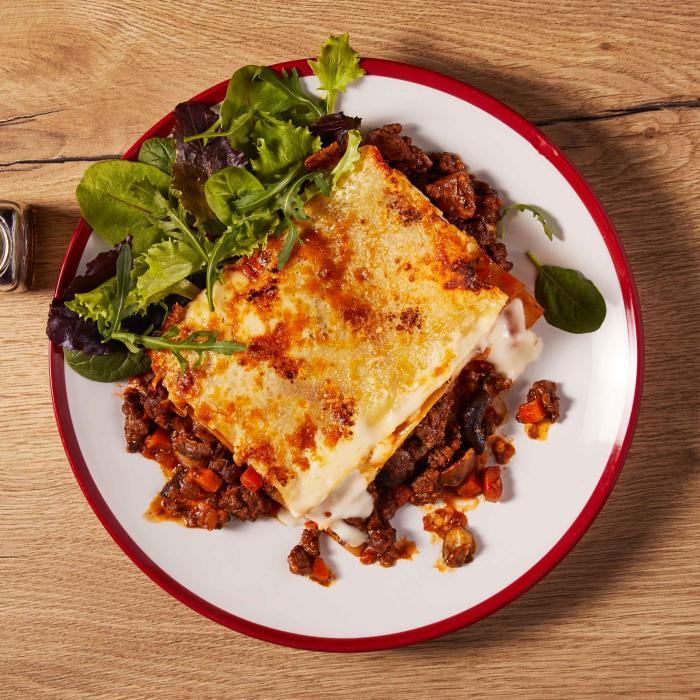

Lasagne
This lasagna is perfect to prepare in advance. Simply cool to room temperature after baking,
then cover and keep in the fridge. Reheat in the oven until heated through, 10 to 20 minutes.

Ingredients for the ragu
- 900g/2lb beef mince
- 2 onions, roughly chopped
- 4 sticks celery, diced (optional)
- 2 garlic cloves, crushed
- 2 level tbsp plain flour
- 150ml/¼ pint beef stock
- 1 tbsp redcurrant jelly (optional) or 1 tsp caster sugar
- 3 tbsp tomato purée
- 1 tbsp chopped thyme
- 2 x 400g cans chopped tomatoes
Ingredients for the white sauce
- 50g/2oz butter
- 50g/2oz plain flour
- 750ml/1¼ pints hot milk
- 2 tsp Dijon mustard
- 50g/2oz Parmesan, finely grated
- salt and freshly ground black pepper
Ingredients for the lasagne
- 12 lasagne sheets
- 75g/3oz mature cheddar, grated
Cooking instructions
- Preheat the oven to160C/325F/Gas 3.
- For the ragu, heat a large frying pan until hot and add the oil.
Cook the mince until browned all over.
Remove from the heat and transfer to a plate.
Add the onion, celery (if using) and garlic to
the pan and cook until softened.
Return the meat to the pan and stir in the flour. Add the stock and bring to the boil.
Add the redcurrant jelly (or sugar), tomato purée and thyme, then stir well.
- Stir in the canned tomatoes. Bring to the boil again, cover and simmer in the oven for 1-½ hours, or until the beef is tender.
- For the white sauce, melt the butter in a saucepan. Add the flour and cook over the heat for one minute.
Gradually whisk in the hot milk, whisking until thickened.
Add the Dijon mustard and
parmesan cheese and season well with salt and pepper.
- For the lasagne, put one third of the meat sauce in the base of a 2.3 litre/4 pint shallow ovenproof dish.
Spoon one third of the white sauce on top. Arrange one layer of lasagne sheets on top and Season.
Spoon half of the remaining meat sauce on top and then half of the white sauce.
Put another layer of lasagne sheets on top,
then the remaining meat sauce and remaining white sauce.
Sprinkle over the cheddar cheese.
- Leave for six hours before cooking so that the pasta can start to soften.
- Preheat the oven temperature to 200C/400F/Gas 6.
- Cook in the middle of the oven for about 45 minutes- or until golden brown on top, bubbling around the edges and the pasta is soft.
- This is your Lasagne. Enjoy!
Homepage